As our Season #2 finale, If Wet #20 was never going to run totally smoothly. Last year’s finale event was delayed by a bouncy castle, so we had form. For this event, our main presenting artist, Rosanne Robertson, was severely delayed so we had to busk it somewhat.
Luckily, we had invited all of the artists from our second season to come along as our guests and some of them turned up with stuff to present. We also had a couple of great Run What Ya Brung presentations so we were kept very busy until Rosanne arrived.
After Rosanne’s wonderful presentation/performance we had a section where we read out or played back responses to If Wet from all the artists who presented in 2014. This was lovely, so we have documented that below too.
Thank you to everyone for your support this year. We have some [Kickstarter] plans for next season and we are running a radio show (starting on 28th December, 2-4pm) in the meantime. It has been a really lovely year for us.
Thank you for coming down to the hall! X
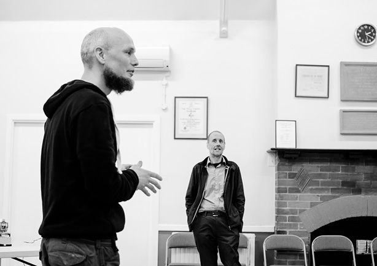
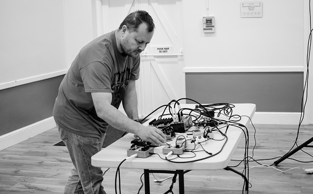
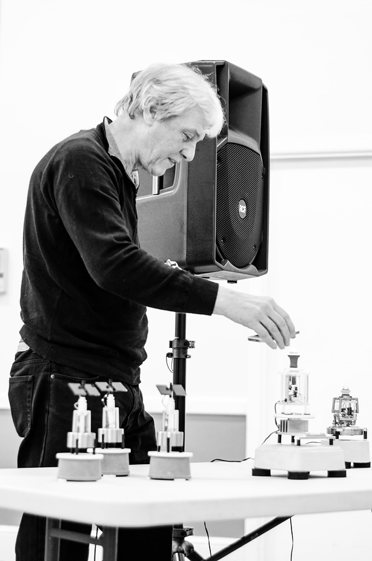
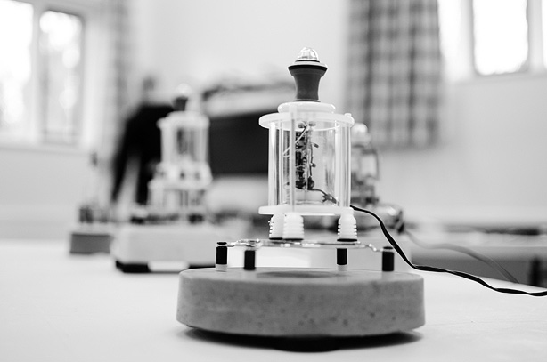
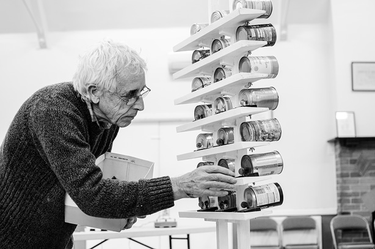
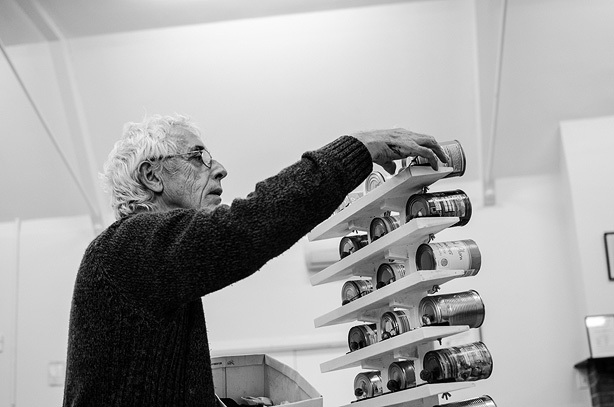
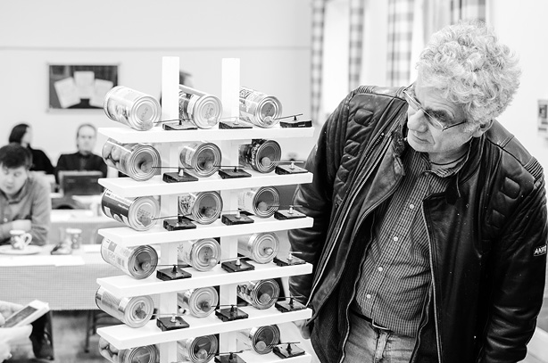
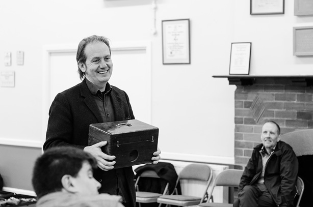
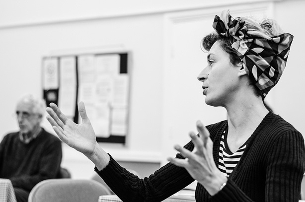
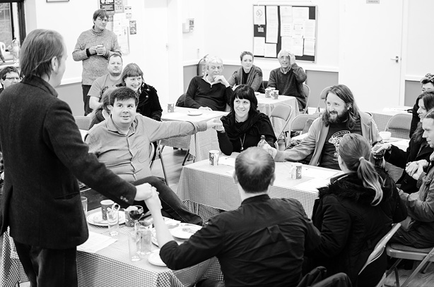
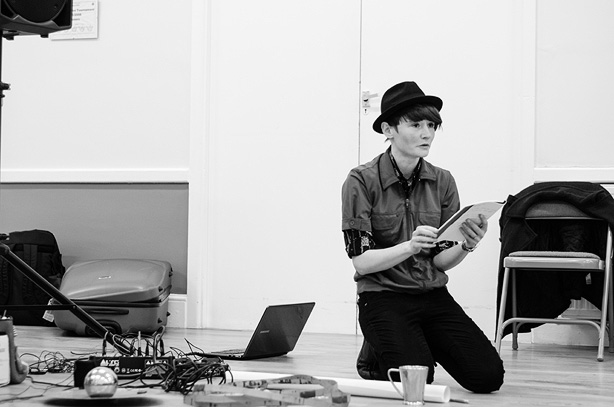
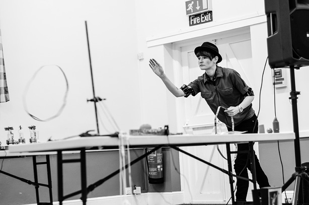
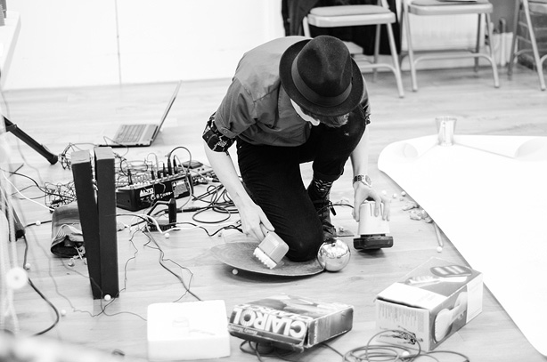
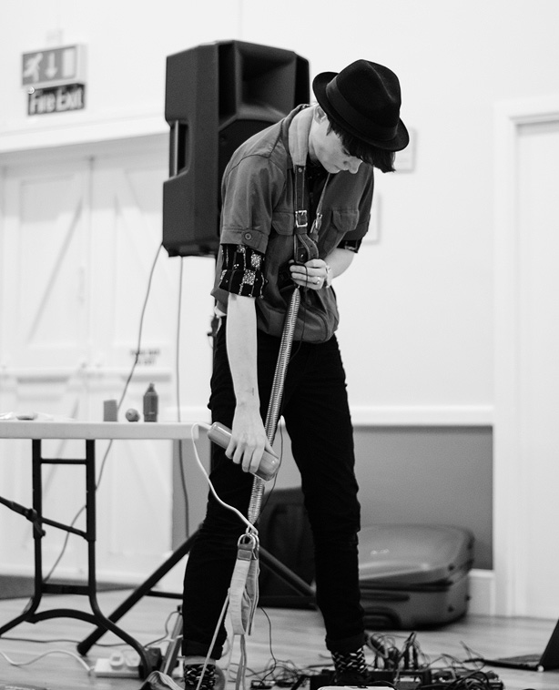
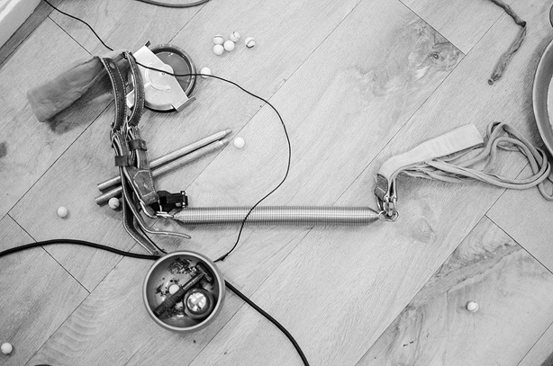
———————
As mentioned we asked all Season #2 artists to attend or send us a response of some kind regarding their experience of If Wet. Here they are:
FLATPACK
Sebastian Hegarty
I had a great day with If Wet at the Flatpack Festival, Birmingham. Got to hear the water instrument and the wet acoustics of Trevor Cox with his wave organs, dripping stalactites and subterranean oil reservoir: Lovely people, fascinating ideas and spoiled ears. Thank you very much Sam and David.
Distant Voices: Still Raining is a short damp apology for not being there (If Wet #20). The sound includes the remains of rainfall as it drip-drops through guttering and a short soliloquy in a fragment of voice taken from a telephone conversation with my lovely mam. The piece concludes with the song, I Get the Blues, filched from Terence Davies wonderful film, Distant Voices/Still Lives.
Trevor Cox
I can think of nothing more appropriate for If Wet then to send a sound effect for everyone to enjoy.
It is from a trip to an Oslo train station. This is me chatting in the space so people can hear the effect and it describes what is going on:
And here is a balloon burst, that brings out the warble:
The secret behind the warble is that this is space made from two half-cylinders of different radius connected together.
SUPERSONIC
Ryan Jordan
Enclosed his press release: “these practitioners practice dark hypnosis in psychoactive hyperventilation clubs”
Sarah Kenchington
sorry not to reply sooner , I have been a bit gobbled up by my new job working in a chocolate factory.
If wet was great super friendly and interesting. Sorry I won’t be able to make it to Callow End, sounds spooky.
A few weeks before if wet I had been to a car boot sale, and found a rather amazing pedal powered fret saw, I did my usual thing, instead of rehearsing I built a new instrument, I converted the fret saw into a machine to bow my violin. The first gig we did in front of maniac children it didn’t work and then at the If Wet gig it worked like a dream and I pretended I was a virtuoso violin player. Everyone believed me. I also included a bath tub for the first time in my orchestra. Since then I have been using the bath full of water. Getting right into watery trumpet sounds Perhaps you could play the thing I did on the Isle of Eigg. I thought it would be appropriate for an If Wet event .Wet as anything it is.
Graham Dunning
In the spirit of If Wet me and Leslie decided to make an instrument and make some sounds with it. I had a wooden box with a lid knocking about and we bought some other bits and bobs from the local 98p Store. We recorded the whole process of making and experimenting as we went, with a nod to Robert Morris’ Box With The Sound of Its Own Making – the intention was to edit that down to a short piece for you to play.
TOUR
Sompting Village Hall
Leslie Deere
See above w/ Graham Dunning.
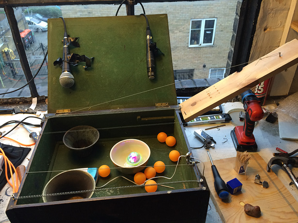
Sarah Angliss
Fitzhead Tythe Barn
Jules Bushell
“It was great fun and fascinating to meet other makers and sonic explorers at ‘If Wet’. An opportunity to meet other likeminded individuals, and a relief to realise there are people out there with similar interests. You are not alone! A chance to share ideas and take contraptions out of the workshop, even if they are still works in progress. Thanks guys, have fun, sorry not to join you there!”
Hacker Farm
Here ya go – this is what 6.00am in my house sounded like this morning.
And a separate message from KEK
“Hey. Thanks for the 2014 village-hall invite, IF-WETTERS; really enjoyed scrrra-a-a-a-aping the HTML from your website and turning it into MIDI-file music. Never played a musical web-page before. Digging those Tuh-tuh-text squirts, man; it’s the New Serialism”
Bardsea Malt Kiln
Hugs Bison
Lee Patterson (1st)
As always, I’m on the last minute, in fact it’s a wonder I made it to either of the If Wet events that I contributed to this year – Bardsea and Callow End… Anyhow, both events reminded me that, despite the isolated way in which we may consume and produce music, music always has a social element – whether implied or actual and opportunities to share with like minds are increasingly rare. So, Sam, David – keep up the good work at Callow End and elsewhere!
Right, got to rush to catch a train to Huddersfield!
Callow End Village Hall
Paddy Steer
Callow End Village Hall
Lee Patterson (2nd)
See above.
Worcester Music Festival
Paul Gittins
Present
Ray Lee and Stav
Present
Callow End Village Hall
Sarah Nicolls
I loved being at If Wet: an intelligent, friendly and totally engaged audience. It was a really useful and genuinely fun and encouraging experience.
Callow End Village Hall
Pete Ashton
Present
Ben Gwilliam
If wet? not as much as it would be where I live, callow end hall dry n all.
Thanks very much for the opportunity to try out elements of current works, that although they are incomplete, at if wet I can test the metal of the idea and importantly the way it sounds.
As much as I try out sound as music, you gave me an opportunity to test visual work that confirms for me the direction that making stuff like this does: always in the opposite of what everything else is!
So I wish you all the best for this last one of the season, I do hope that season three makes it round swiftly next year. Every town should have a collective space for discussion, presentation & banter on artists work that is as informal & invaluable as if wet. Doing these activities keep the arts real. So continue to keep it real.
THANK YOU ALL!